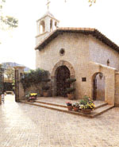
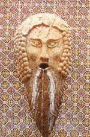
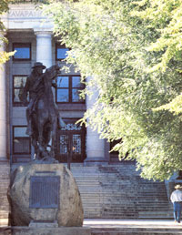
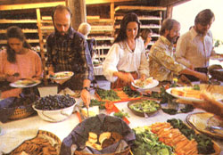
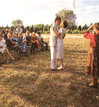
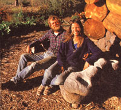
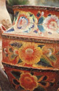
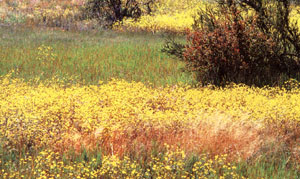
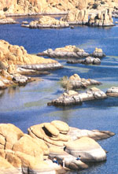

Arizona's Yavapai County
Continuing series on the best sections of North America in which to pursue a rural lifestyle, including region history, economics, education and health, the Verde River valley.
By Sara Pacher
January/February 1987
CREAM OF THE COUNTRY
The third in a series on the best sections of North America in which to pursue a rural lifestyle.
Don and Becky Routsen feel lucky. Six years ago, they moved to Yavapai (pronounced "YAV-ah-pie") County, Arizona, to escape Montana winters. After looking for land for a year, they bought 40 abused acres in the Williamson Valley north of Prescott for $2,500 an acre (that land would now sell for at least twice as much) and have turned it into an attractive and productive homestead.
Part of the Routsens' good fortune comes from owning two fine wells. Don used his skills as a civil engineer to erect a recycled wind-powered water pump and a huge cement water tank. The energetic couple also built a small reservoir (which doubles as a swimming pool) to irrigate their two-acre organic garden. Becky markets some of the produce to local restaurants and at the Swap Meet held every Saturday in Prescott. Much of the rest they preserve and store in a handsome root cellar they dug into a hillside near the site of their future earth-sheltered home. They've also made themselves a large pond, which they plan to stock with fish. But most impressive of all is their two-and-a-half-story, two-bedroom, octagonal, log-and-stone house with a passivesolar greenhouse-constructed in six months at a cost of $5,000, using locally scrounged materials.
"It's remarkable what you can do when winter's on the way and you need a roof over your head," Becky says. "We only took two days off: one for me to have a baby, and one when Don cut his neck with a chain saw."
The Routsens have three young children now, for whom they've built a tree house. Their chickens and turkeys share a "luxury duplex" with big picture windows and separate fenced-in "patios," and a milk cow grazes on some of the land they've put to pasture. An orchard and a vineyard are beginning to produce fruit. There's a shady walnut grove with picnic tables and a cooking pit for holding big chili roasts. Round depressions in the earth and pottery shards mark the pit houses of ancient people who also found this a pleasant place to live.
Yavapai has four distinctseasons, but really severe weather is quite rare.
Fresh Air and Blue Skies
Of all the region's many attractions, one, above others, makes this country delightful: the climate.
Situated in Arizona's central mountains, Yavapai County's 8,091-square-mile area (more than six times the size of Rhode Island) and 81,200 population nestle between Phoenix's sizzling summer heat and Flagstaff's freezing winter snows. There are still four distinct seasons, but none is severe. Because of elevation and other factors, however, temperatures vary in different parts of the county.
In Prescott, one of Yavapai's colder towns, for example, average January temperatures range from a low of 21.5°F to a high of 50.1°, while July brings an average minimum of 56.9° and maximum of 88.9°. Skies here are clear 174 days a year, partly cloudy 99 days, and overcast 92 days. Few homeowners in and around Prescott feel the need for air conditioners, but many own solar hot water heaters and passive solar greenhouses.
Yearly precipitation averages from some 13 inches in Clarkdale to 19 inches in Prescott. (August brings what the locals call "the monsoons," when afternoon thunderstorms may drop a monthly total of three inches of rain or more.) There are usually a few light snows a year, but these melt quickly except on northern exposures and in higher elevations, where cross-country skiing is popular.
As in any mountainous area, however, the weather can be fickle. There are occasional flash floods, severe thunderstorms with hail, and snows over half a foot deep, but such immoderate weather is rare. Best of all, the low humidity-usually below 50°70-brings relief to painful joints and sinuses, and even in today's polluted world, the air is usually a pleasure to breathe. In fact, the region has long attracted those with allergies, asthma, and other lung problems.
A Long, Rich History
The county's mild climate, along with its adequate water and abundant sunshine, has enticed permanent settlers often during the last 1,400 years. The first were the Hohokam (Pima for "those who have gone") Indians. These skillful farmers moved into the Verde River Valley around 600 A.D. They lived in one-room, mud-and-stick houses and grew irrigated crops of beans, squash, and cotton. After the ashfall from the eruptions of Sunset Crater in the mid-1060s created fertile lands to the north, the Hohokam migrated there and were replaced around 1125 by the Sinagua (Spanish for "without water"), who had previously lived in pit houses and depended on rainfall for agriculture. Once in the valley, however, the Sinagua adopted the Hohokams' irrigation systems and soon were building large pueblos on hilltops and in cliffs. (Three of these-Montezuma Castle, Montezuma Well, and Tuzigoot-are now national monuments.) With available water, fertile bottomlands, and plentiful fish and game, these Native Americans had the leisure to develop into fine artisans, who wove handsome cotton garments, fashioned exquisite ornaments, and made excellent pottery. No one knows why, but by the time the first Spanish explorers came in 1583, the Sinagua had abandoned the valley-perhaps because of a conflict with the Yavapai tribe, whom the Spaniards found living there.
For 300 years after the visit of the con quistadors, the region's Yavapai and Apache people were left in peace. But with the discovery of gold in 1863, bonanza-minded New Englanders established the town of Prescott, bringing their thrift, enterprise, and architecture with them. In 1864, one year after Arizona became a territory, this mile-high settlement became its first capital. By 1883, there were over 7,300 gold mines in the area. In a half-dozen years, most of the Indians had been pushed onto distant reservations, and Prescott's population reached 4,000.
Yavapai's Centerpiece
Today, Prescott, Yavapai's county seat and largest urban area, spreads out beneath soaring Thumb Butte and multifaceted Granite Mountain. Bordered by over 1 million acres of national forests, it sits strategically 96 miles northwest of Phoenix and 90 miles southwest of Flagstaff at an altitude of 5,389 feet. Busy Interstate Highway 17 from Phoenix to Flagstaff bypasses the town, and the residents I talked to were pleased to be off the beaten track. "It keeps transients and the crime rate down," one local told me.
With around 25,000 citizens and a growing influx of tourists, retirees, and summer people, Prescott is changing. For example, many of the old bars on Montezuma Street (also known as Whiskey Row) are now arts and crafts shops.
Even so, Prescott takes pride in its past and works to preserve it. Many of the 100-yearold buildings, including a number of lovely Victorian homes, have been restored. Large, elm-shaded Courthouse Square is still the city's meeting place. Families picnic, workers brownbag their lunches, old men play chess, top artists participate in public shows, and dances enliven summer evenings.
Prescott claims it sponsored the first rodeo in 1888, and the event has been held every Fourth of July since. The annual, and popular, Prescott Bluegrass Festival adds a country crescendo to July. The town also considers itself-with a great deal of justification-"the softball capital of the world." Some 100 teams-made up of young and old, men and women-fill the city's 15 softball/baseball fields every summer night, and local tournaments sometimes draw national and international contenders.
The old Elks Opera House now accommodates the Yavapai College Community Theater, a performing arts center with four large auditoriums for plays, concerts, and symphonies. Local theater productions always sell out, and Prescott was the first town in Arizona to sponsor a full symphony season under the aegis of the Phoenix Symphony Orchestra, even though the cultural attractions of Phoenix are only two hours away.
Wildlife still abounds arou nd the city, and hunting is a popular pastime. A number of fishing lakes are also close at hand.
Economics, Education, and Health
Manufacturing is Prescott's fastest-growing economic activity; over 500 acres in and around town have been zoned for light industry. A 150-room Sheraton Hotel and Convention Center is going up at the Sundog Industrial Park (owned by the Yavapai Indian Tribe, whose smell reservation adjoins Prescott). Local firms make ladies' blouses, motors, windows and doors, electronic navigation systems, plastic molds and dies, and such cement products as septic tanks and manhole covers. To preserve the clean atmosphere for which it is famous, Prescott discourages heavy industry.
Government agencies rank among Prescott's big employers (there's a long-established Veterans Administration Center, as well as the Prescott National Forest headquarters, with its annual payroll of $2 million). Incoming retirees make the housing market strong. Many small contractors are in lively competition with each other, and I was told that people with such skills as cabinetmaking would probably find jobs plentiful; so would medical and legal secretaries. Small entrepreneurs have been successful in the region, too. Still, I was warned that, while minimum-wage service jobs are available, people moving to the area had best be skilled at some trade or profession and have the means to survive for six months until they become established. (Last August, unem ployment in Yavapai County was 6.1%, below the national rate of 6.8%.)
Mining in Yavapai has dropped, but traditional cattle and sheep ranching still play a large part in the economy. Commercial agriculture, however, has begun to fade, unable to compete with produce shipped in from California, Colorado, and Mexico. Even small truck farmers are going broke.
More recently, the area has profited from the services stimulated by tourism and Prescott's renown as an ideal retirement area. In fact, over a third of the city's population is 50 or older. Active in all areas of life, the over-50s volunteer their services to numerous city, county, and civic organizations.
Retirees, however, usually want the same public services they had in the cities they came from. Fulfilling these expectations tends to raise the very taxes that such people wanted to escape. (Prescott levies a 1% sales tax on top of the county's 1% and the state's 5%, bringing the total to 7%. Property taxes generally run about 1% of true market value. State income tax is approximately 10% of federal.) On a positive side, the retirement community has drawn many physicians, and the 127-bed Yavapai Community Hospital offers a complete range of medical services.
Partly balancing Prescott's older generation are the students who attend the city's colleges and university. Yavapai Community College (5,300 students) is a public two-year college with a broad academic transfer program and a technical vocational program. Its offerings include 90 areas of study with 45 degree programs, 23 certificate programs, and a special Retirement College for students over 62. Prescott College, a four-year liberal arts college with an enrollment of around 200 and a student-faculty ratio of 10 to 1, awards bachelors degrees in outdoor action, environmental education, human development, humanities, and Southwest studies. It recently added a degree program fitted to the leisure hours of working adults.
The western branch of four-year Embry-Riddle Aeronautical University, whose population of 1,000 students is expected to double by 1990, grants degrees in aeronautical engineering, computer and aeronautical science, aviation business administration, air studies, and electrical engineering. Its campus sprawls near Prescott Municipal Airport, site of the university's flight-training programs. (The airport is served by Golden Pacific Airlines, which offers commuter flights to Phoenix and Las Vegas.)
Water and water rights should be the main concerns of would-be settlers.The Prescott Unified School District has 4,800 students, five elementary schools, two junior highs, and a high school. There are also private and denominational schools in the area (including one on a 40,000-acre ranch), as well as 25 summer camps.
Teachers' salaries in Yavapai average around $22,000, and residents seem pleased with the quality of education.
Prescott's Nearby Countryside
People here ask, "Have you been out to the big trees?" They're usually referring to an area southeast of town called Grove Creek, tucked into the thick ponderosa pines that make up much of Prescott National Forest. This community features charming houses and small homesteads-with price tags of $60,000 to $70,000-located close to horseback and hiking trails. (Houses in the Prescott area generally cost $58,000 to $85,000, but I did see ads for three-bedroom, two-bath homes in the 40s.)
A number of valleys, each with its own variation in climate and atmosphere, lie within easy driving distance of Prescott. Though there are cattle ranches in all these areas and horses are a passion everywhere in Yavapai, Skull Valley (named for the bones left from a battle between two Indian tribes) to the west and Peeples Valley to the southwest are the prime ranching spreads. Prescott Valley, reached by Highway 69, the main road to Phoenix, runs to the northeast, and has many small retirement communities and mobile home parks of its own.
Follow Highway 69 to the south and, where it joins Interstate 17 at Cordes Junction, you'll see small signs directing you to Arcosanti, an experiment in energy-efficient urban architecture designed by the Italian architect Paolo Soleri and being built with the help of apprentices. This prototype of a future city combining achitecture with ecology is open to the public. Arcosanti's bakery turns out breads famous throughout the area. Most of the community's revenues (75%) come from its handcrafted bells, which cost from 12 to several thousand dollars. Arcosanti also offers workshops, conferences, and festivals, and resident musicians and guest artists teach and perform at its music center.
Not so many years ago, Chino Valley, north of Prescott, was a rich agricultural area, dotted with gushing artesian wells. Its large commercial farms grew corn, pinto beans, and other produce for the Phoenix/ Tucson market. Infestations of Mexican bean beetles have since made many Chino gardeners opt for the more resistant crowder and black-eyed peas, and the valley's water has become a source of contention. (Prescott, which owns land in the valley and gets some of its water from there, is in court battles now with the town of Chino Valley over this vital resource, and no new agricultural wells can be drilled.)
In fact, the question of water rights in the entire state is now being fought out in the Arizona courts. It seems there are more water rights than there is water, so, a short time back, residents had to file their claims and report their water uses to the state, which will now decide who gets what. In other words, when you buy land, you can't assume that you own the water flowing through or under it. It will probably be years before the issue is settled. "I doubt if my grandchildren will get a final word on it," one man sighed. (There are both shallow- and deep-water tables running under Chino. Depending on the elevation of your land, you may hit the shallow one at less than 100 feet. If not, you'll probably have to drill at least 400 feet. The cost of drilling, including the required casing, is about $15 a foot.)
Gary and Molly Beverly, whose homestead is on the outskirts of the town of Chino Valley, pop. 5,000, found water at less than 50 feet and have made good use of it (see "Chino Valley Changes"). The Beverlys built their small, solar-heated house out of adobe bricks and packed earth. They undertook the task to prepare themselves for building a larger home that will be added to the present shelter soon. When the new section is finished, their current living quarters will become Molly's pottery studio. She sells her attractive and sometimes whimsical wares in shops throughout the area, teaches a cooking class, and writes a cooking column for the paper (she has a degree in English).
Gary, who has a Ph.D. in physical chem istry, is a solar contractor and consultant. He says new solar installations have fallen off since the federal tax credits ran out, but he finds plenty of work in maintenance and repairs. The Beverlys also have a fine garden that provides much of their food and is irrigated by a goldfish pond/swimming pool/ reservoir. Molly finds a ready market in area restaurants for some of her garden herbs. They also grow an acre of organic garlic, which is sold as far away as Arkansas.
The Beverlys paid $3,000 an acre for their five acres eight years ago, but now the peracre price for equivalent property would be closer to $8,000. (A one-acre lot in Chino sells for about $12,000.) Warning: If you find a land bargain in Yavapai, you'd better be very cautious. A Prescott real estate agent told me that three things are of prime importance: water rights, percolation tests, and access rights.
"There's solid granite beneath a lot of the land around here, and there's no way you can put a septic system in granite. They used to let you blast one out, but not anymore. Your site has to pass perc tests," she said. "Then you have to be aware that the county is checkerboarded with state-owned land. People who have been crossing it for years are now being told they don't have access rights, though the state might deed those rightsfor a price."
Towns in Yavapai have adopted uniform building codes, and the county probably will shortly.
The Verde River Valley
Jerome-named for Eugene Jerome, a cousin of Winston Churchill's mother-perches precariously on a mountainside some 31 miles northwest of Prescott. Once a booming mining town (a young Pancho Villa delivered its first water from nearby Walnut Springs) and the fifth largest settlement in Arizona, it was known as "the wickedest city in the West." But when the mines closed in 1953, its population of 15,000 sank to 50. Now, attracted by the town's 233 frost-free days, twisting streets, old buildings, and growing tourist trade, 450 residents-many in arts and crafts-give the town a new life in which fine restaurants, interesting shops, and art galleries play a large part. Jerome also offers a superb view of the Verde River Valley and the San Francisco Mountains behind distant Flagstaff. Immediately below the town, the old Douglas Mansion, which "Rawhide Jimmy" Douglas built just above his Little Daisy Mine, is now Jerome State Historic Park.
Down in the 60-mile-long, 40-mile-wide Verde Valley, some 3,500 feet above sea level, you'll find many of the features that made it attractive to ancient Indians. One of the fastest-growing areas in Arizona, it's still known for good fishing and bountiful deer, antelope, turkey, elk, javelina, and game birds. By now, however, the rural areas are crisscrossed with good roads and dotted with a number of small towns and communities, such as Clarkdale, Montezuma, Page Springs, Rimrock, McGuireville, Cornville, and Camp Verde. But the center of activity is Cottonwood (population 5,025). Here you can find 26 churches, a 104-bed hospital, and a branch of Yavapai College. Though the median price of a home in Cottonwood is $69,500, a real estate agent told me he had recently sold a two-bedroom, one-bath house in "Old Cottonwood" (which I found more charming than the subdivisions and shopping centers of the new area) for $14,000. I was also told that fixer-uppers can be found in the valley in the $20,000 to $30,000 range.
Such bargains are unheard of, however, in Sedona, which lies on the northeastern edge of the valley in spectacular "red-rock country." Here, homes set against a dramatic backdrop of towering, erosion-sculpted, red sandstone are likely to start at $100,000 and skyrocket from there. This tourist/retirement town provides a fantastic market for talented artists and craftspeople. Tlaquepaque, just outside of town, is a large complex of fine shops, plazas, courtyards, and fountains, designed to look like an ideal Mexican village. Many of the buildings in Sedona have the same flavor.
The town actually straddles the Yavapai and Coconino County line and has, therefore, never been incorporated. Half its high school students attend classes in Cottonwood; the other half go to Flagstaff,45 minutes away through beautiful Oak Creek Canyon. (Flagstaff is also home to Northern Arizona University.)
The People
I met few native Arizonians during my stay in Yavapai. Everyone seemed to be from somewhere else, but they all loved their new home with the intense pride of the nativeborn. (Arizona Highways has called Prescott "everybody's hometown.") They also seem willing and able to uphold Arizona's reputation as a last bastion of rugged individualism. Without exception-perhaps because most were once strangers there themselves-I encountered nothing but friendly, open people who were easy to strike up conversations with and who went out of their way to be helpful.
But what I enjoyed above all else about Yavapai was clean air, bones that never ached from dampness, and blue, blue skies!
 Shelly Katz |
 Shelly Katz |
 Shelly Katz |
|
 Shelly Katz |
 Shelly Katz |
 Shelly Katz |
|
 Shelly Katz |
 Shelly Katz |
 Shelly Katz |
|
 Shelly Katz |
|
|